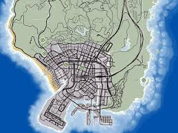
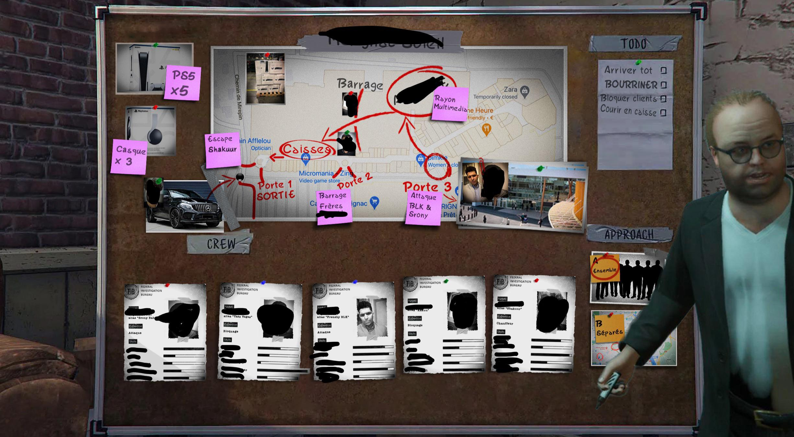
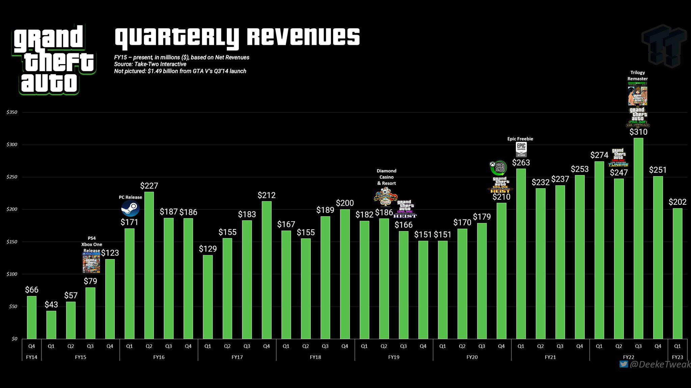
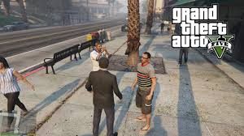
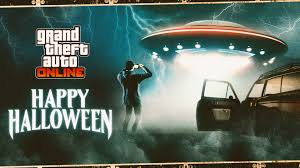

1. O mapa de GTA V é gigantesco
O mapa de GTA V é maior do que os mapas de GTA San Andreas, GTA IV e Red Dead Redemption combinados!

Descubra curiosidades incríveis sobre um dos maiores sucessos da história dos games!
O mapa de GTA V é maior do que os mapas de GTA San Andreas, GTA IV e Red Dead Redemption combinados!

Mais de 1.000 pessoas trabalharam no jogo, que começou a ser feito em 2008 e foi lançado em 2013.

Arrecadou 1 bilhão de dólares em apenas 3 dias, sendo o produto de entretenimento mais lucrativo da história!

NPCs vão ao trabalho, treinam, almoçam e voltam para casa, tudo de forma automática e variada.

No topo do Monte Chiliad, você pode ver um OVNI se completar 100% do jogo e esperar o clima certo.
